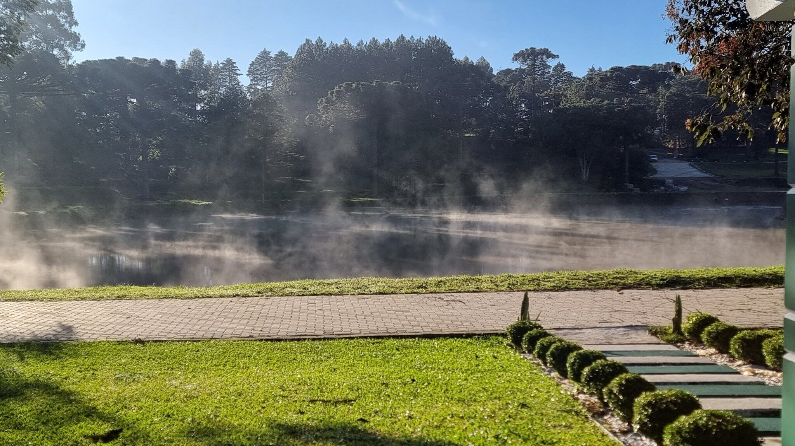
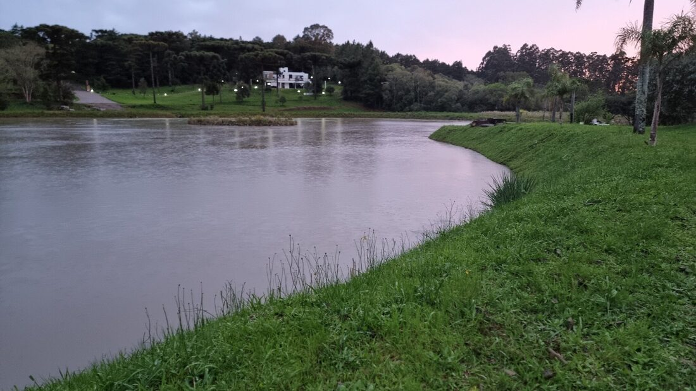
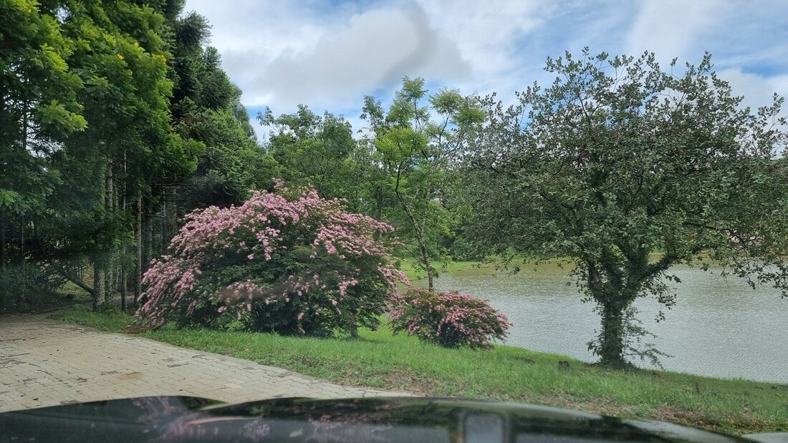
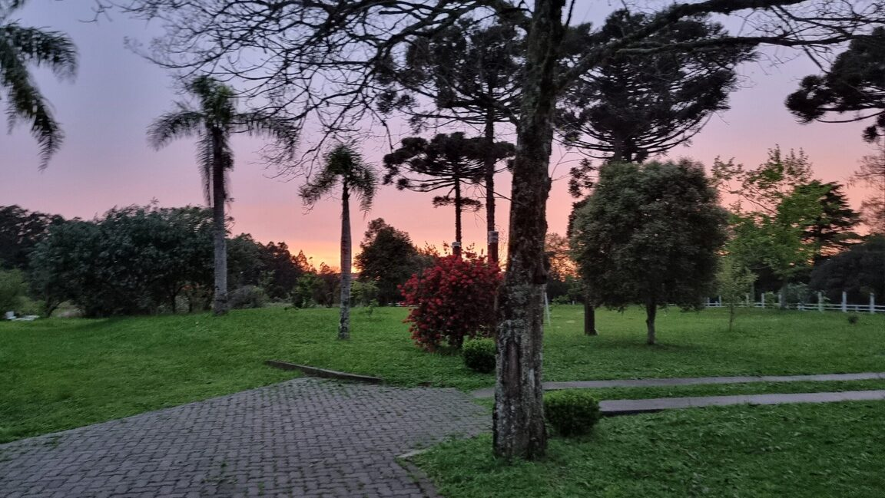

Natureza em grande escala
Mais de 25 hectares onde áreas verdes, água e paisagem formam uma unidade.
Um projeto de baixíssima densidade, cercado por Mata Atlântica, lago, riachos e uma paisagem singular no Sul do Brasil.
A Ecovila Mundo Verde nasce em uma propriedade com mais de 25 hectares e será formada por apenas 18 lotes. Essa proporção traduz a essência do projeto: preservar o espaço, respeitar a paisagem e oferecer liberdade, privacidade e qualidade de vida.
Os lotes são distribuídos de forma planejada para valorizar a relação com o lago principal. Riachos percorrem a propriedade, revelando uma abundância de água que se integra à mata, aos campos e aos caminhos naturais. Aqui, a natureza não funciona como cenário: ela determina o ritmo, orienta a implantação e faz parte da experiência diária.
A flora exuberante, a fauna nativa e as araucárias formam um ambiente vivo, raro e profundamente conectado à identidade da região. Cada estação transforma as cores, os sons e a paisagem, criando uma maneira de morar que aproxima as pessoas do essencial.
Localizada em Fontoura Xavier, no Rio Grande do Sul, a Ecovila combina acesso privilegiado pela BR-386 com a tranquilidade de um refúgio particular. Mais do que adquirir um terreno, é escolher um lugar para construir raízes, viver com autenticidade e pertencer a algo verdadeiramente único.

Cada estação muda as cores,
Mata Atlântica · lago · riachos
os sons e a paisagem.
Mais de 25 hectares onde áreas verdes, água e paisagem formam uma unidade.
Apenas 18 lotes em uma ocupação planejada para preservar espaço e privacidade.
Um lago principal e riachos naturais que dão identidade e vida à propriedade.
Flora exuberante, fauna nativa e araucárias compondo uma paisagem singular.
Árvores adultas, jardins floridos, campos, mata nativa e recursos hídricos já fazem parte desta paisagem. Não se trata de uma promessa distante, mas de um ambiente real, consolidado e pronto para ser vivido com respeito.
Os caminhos entre a mata convidam a caminhar, contemplar e desacelerar. Para crianças, adultos e todas as gerações, a Ecovila propõe uma rotina com mais liberdade, silêncio, segurança e conexão com a terra.
Você morando no paraíso. Uma frase que, aqui, ganha forma, endereço e significado.
CONHECER A ESTRUTURA

